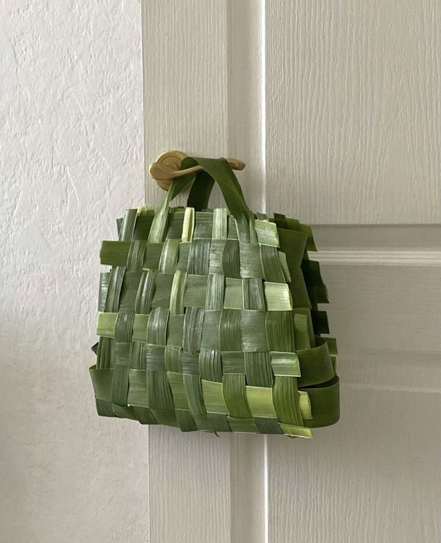
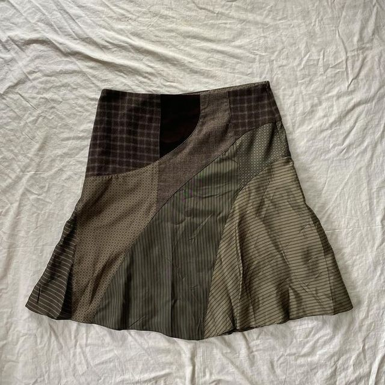
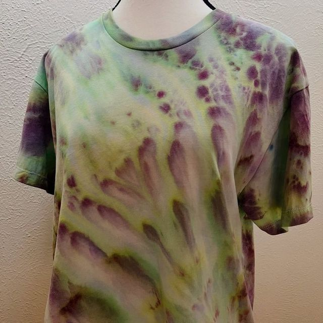
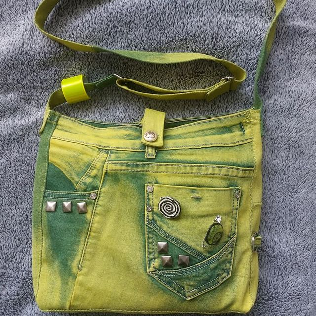
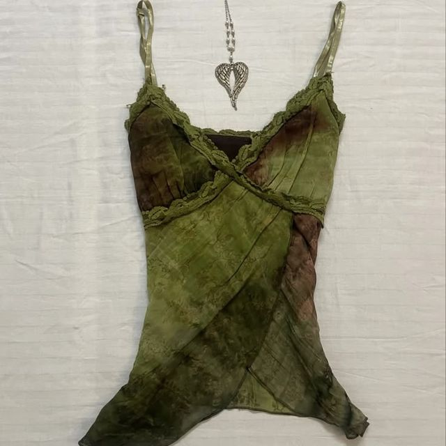
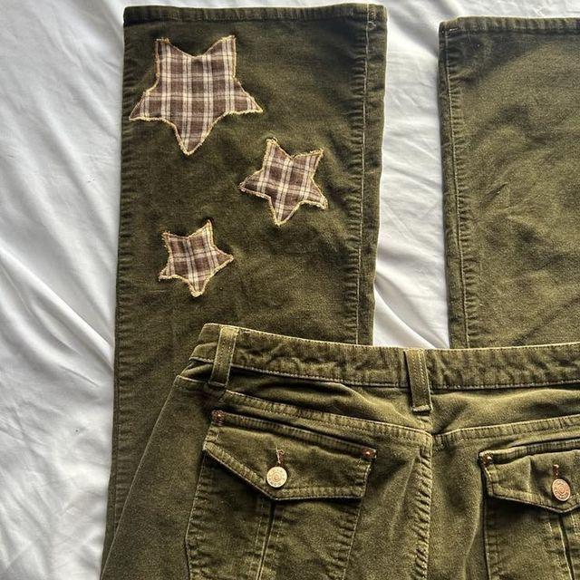

Feito com Calma
Produção em pequena escala, sob encomenda ou em séries curtas, que respeita o tempo de quem cria e evita o excesso de estoque.
Conheça artesãos, costureiras e pequenas marcas que produzem com ética, calma e cuidado, e leve para casa peças feitas para durar.
Slow fashion, ou moda lenta, é o contrário da produção em massa: peças feitas com calma, em pequena quantidade, com materiais escolhidos e com pessoas valorizadas em cada etapa.
Em vez de seguir tendências que mudam toda semana, ela prioriza peças atemporais e duráveis, que acompanham quem as veste por muitos anos.
Ao comprar de artesãos, costureiras e marcas independentes, o dinheiro fica na economia local e ajuda a garantir trabalho justo e remuneração ética.

Produção em pequena escala, sob encomenda ou em séries curtas, que respeita o tempo de quem cria e evita o excesso de estoque.
Cada peça tem uma história e um nome por trás. O trabalho é reconhecido e remunerado de forma justa, sem precarização.
Costuras reforçadas, materiais de baixo impacto e modelagens atemporais, para que a peça seja usada, consertada e reaproveitada.
Artesãos, costureiras e marcas independentes que fazem a diferença no bairro e na cidade.
Os criadores, as peças e os preços desta página são fictícios e foram criados para demonstrar o funcionamento do site.
Rosana transforma sobras de tecido de confecções em bolsas, saias e acessórios únicos, sem desperdício.
Grupo de mulheres do bairro que produz peças de crochê e tricô e divide a renda entre todas as participantes.
Pequena marca que tinge tecidos e peças reaproveitadas com corantes naturais, sem usar corantes sintéticos tóxicos.
Cria roupas pensadas para pessoas com deficiência: alças ajustáveis, fechos de fácil abertura, bolsos acessíveis e modelagens confortáveis para quem usa cadeira de rodas.
Cada peça é produzida sob encomenda ou em pequenas séries. Veja quem fez, de que material e quanto tempo leva para ficar pronta.

Ateliê da Rosana
R$ 149,00

Ateliê da Rosana
R$ 98,00

Coletivo Mãos de Tear
R$ 189,00

Coletivo Mãos de Tear
R$ 59,00

Folha & Raiz
R$ 89,00

Folha & Raiz
R$ 99,00

Ateliê Veste Todos
R$ 119,00

Ateliê Veste Todos
R$ 159,00
Na galeria você acompanha, em imagens, como as peças são feitas, do tecido ao produto final.
Fale com a nossa equipe para cadastrar sua marca, tirar dúvidas ou propor uma parceria.